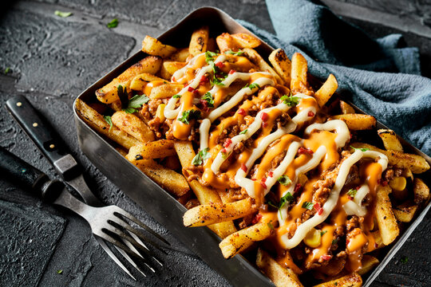
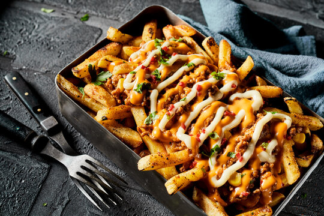

Fast food is a type of mass-produced food that is designed for quick preparation and distribution.
It's often associated with chain restaurants that offer drive-through and take-out services.
Fast food is popular because it's affordable, convenient, and tastes good.
People enjoy fast food, and its popularity is evidence of this.

 
